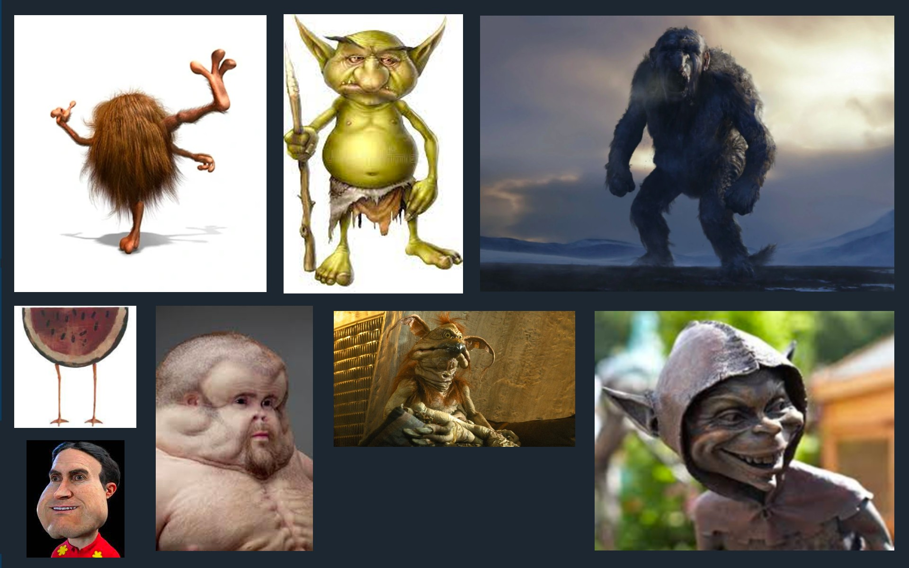

What is GukStruck?
GukStruck is a therapy program located at ██████████, in the Congo Jungle. We (as in Guk) use a variety of methods to help our patients such as; Meditation, Waterboarding, poking them with a very long slightly sharp stick, and other groundbreaking mental health tactics. Patients are flown into Africa by plane, and when they arrive at the therapy office, are personally greeted by Guk (HUGE DEAL). Patients then make a plan about how long their therapy will last, and what they are coming for. They can stay at a five star local hotel, with NO ROACHES and ONLY SOME RATS.
History of GukStruck
Unknown - A being thought to be Guk rolls around, inspiring local caveman to invent wheel
4968 BC - Oldest cave drawing of Guk found
70 BC - Man wanders into Rome screaming about a weird short person who took all his food. He is stoned to death by a homeless man 4 minutes later
49 AD to 1862 - All knowledge of Guk during this time is lost, only local tales of him survive
1863 - The United States government discovers Guk, and decides that he is too powerful to be free. They lock him in a wooden crate and spend the next 150 years trying to wipe all knowledge of him existing from the world.
1979 - Guk is set free by president Jimmy Carter. Carter later states, "He gave me a delightful potion, a delectable brew. He truly left me GukStruck." Right after this he was stoned to death by a homeless man, and was replaced by a Jimmy Carter hologram.
2003 - Guk creates an organization dedicated to hunting Cryptids, after he confuses an escaped zoo orangutan with Bigfoot.
2021 - Guk realizes that after 18 years, he has not seen a single unexplainable creature, and leaves the organization
2022 - Guk moves to the Congo Jungle, and decides to create a therapy program, despite not having any psychology education or experience.
Who Really is Guk?
You have had a brief description of Guk already, but much has been left in mystery and legend. From famous cryptid hunter to therapist, how did he do this? We have gathered experts in every field to determine who or what Guk really is, and we've come to determine some things about him. Ancient cave drawings show of a being shorter than most, but containing great power. Not only that, but many artistic depictions of him have been created right under our noses. Using a 7 billion dollar supercomputer, we have generated the various beings that could be Guk, which will be showcased below. This is important, as Guk changes forms frequently, we think, or the scientists could just be lazy.
